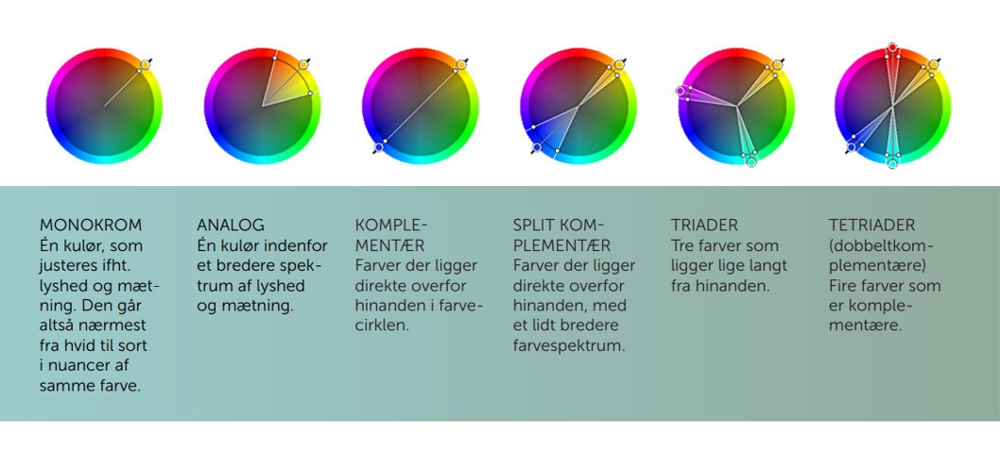

Farvehjulet
CMYK og RGB
Farvesammensætning
Farvehjulet består af følgende:
- Primære farver: Er de rene og ublandede farver (RGB)
- Sekundære farver: Er blandet af to primære farver (fx gul + blå = grøn)
- Teritære farver: Er blandet af én primær farve, og én sekundær farve (fx blå + rød = lilla + blå)
CMYK
- Substraktiv (trækker fra)
- Går fra 0-100%, jo tættere på 100% jo mere sort
- Brugt til tryk
RGB
- Additiv (lægger til)
- Går fra 0-255, jo tættere på 255 jo hvidere
- Brugt til skærme
KULØR/HUE
En graduering eller variation af en farve.
MÆTNING/SATURATION
En kulør blandes med forskellige mængder af gråtone Det siges også, at farven får en ‘valør’.
LYSHED/BRIGHTNESS
En kulør blandes med ren sort eller hvid.